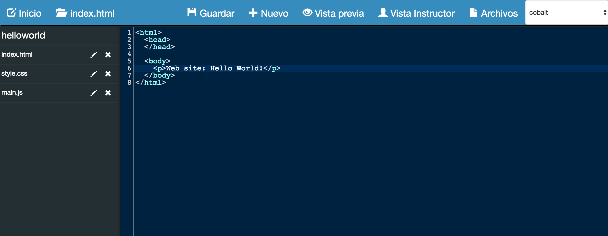
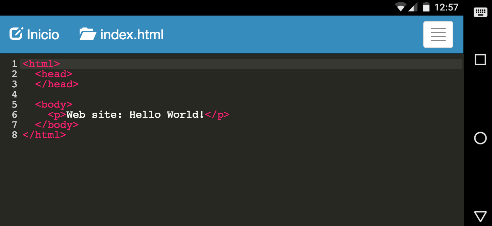

Muditext
Multi display code editor to enhance the web development learning experience.
This is a prototype software developed as part of a research project, using a user-centered design methodology to identify issues in web development learning experience with multiple displays.
We implemented a text editor to support web development learning in pairs using multiple displays (e.g. laptops, external displays and phones/tablets).
Muditext uses the following technologies:
- Meteor framework
- MongoDB
- CodeMirror
- Bootstrap
- JQuery
- IronRouter
Installation
Make sure you have Meteor framework installed on your system. Follow instructions on the Meteor site.
Clone the repository
$ git clone https://github.com/pestrada/muditext.gitOpen a terminal, navigate to the local repository and run:
muditext$ meteorIn a browser, open the url
http://localhost:3000
Screenshots
 